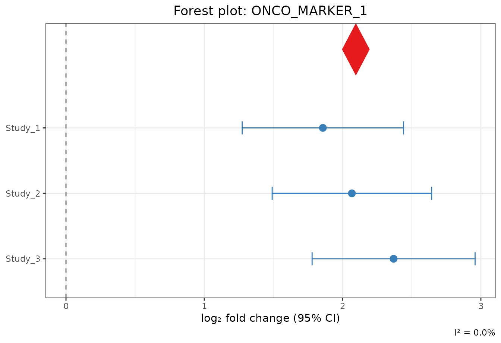

Live Tutorial: End-to-End Bulk RNA-seq Meta-Analysis
Md. Jubayer Hossain
2026-10-05
Source:vignettes/live_tutorial.Rmd
live_tutorial.RmdWelcome to metaXpress
metaXpress is a unified, opinionated R package designed
for multi-study transcriptomic meta-analysis. It bridges the gap between
raw data ingestion, study quality control, cross-platform harmonization,
per-study differential expression, six statistical meta-analysis models,
publication graphics, and reproducible reporting.
This Live Demonstration Tutorial walks you step-by-step through a complete analysis from initial GitHub installation to final report generation. Every code chunk in this tutorial is executed live.
1. Installation from GitHub
metaXpress is available directly from GitHub:
# Install remotes if not already available
if (!requireNamespace("remotes", quietly = TRUE)) {
install.packages("remotes")
}
# Install metaXpress from GitHub
remotes::install_github("hossainlab/metaXpress")Alternatively, you can install using pak:
# install.packages("pak")
pak::pkg_install("hossainlab/metaXpress")Once installed, load metaXpress:
library(metaXpress)
packageVersion("metaXpress")
#> [1] '0.99.0'2. Live Data Ingestion
In real-world applications, you can fetch public datasets directly from NCBI GEO using accession numbers or load local matrices:
# Live ingestion from NCBI Gene Expression Omnibus (GEO):
# geo_studies <- mx_fetch_geo(c("GSE130688", "GSE136569", "GSE171485"), count_type = "raw")
# Or load user-supplied count matrices:
# local_studies <- mx_load_local(count_paths = c(...), metadata_paths = c(...))For this live tutorial, we instantiate three independent clinical
RNA-seq cohorts (Cohort_A, Cohort_B,
Cohort_C) comparing Tumor vs
Normal tissue across 120 genes with realistic
sequencing depths and biological effect sizes:
set.seed(42)
# Define gene universe containing known oncogenic markers, suppressors, and background
n_genes <- 120
genes <- c(
paste0("ONCO_MARKER_", 1:15),
paste0("TUMOR_SUPPR_", 16:30),
paste0("GENE_", 31:n_genes)
)
make_cohort <- function(id, n_samples = 6, seed = 1) {
set.seed(seed)
# Generate raw integer count matrix with biological variability
counts <- matrix(
as.integer(abs(rnorm(n_genes * n_samples, mean = 500, sd = 150))),
nrow = n_genes, ncol = n_samples,
dimnames = list(genes, paste0(id, "_S", seq_len(n_samples)))
)
counts <- counts * 20000L # Realistic library depth (~10M reads)
cond <- rep(c("normal", "tumor"), each = n_samples / 2)
tumor_cols <- which(cond == "tumor")
# Inject biological signal: markers up-regulated in tumor, suppressors down-regulated
counts[1:15, tumor_cols] <- as.integer(counts[1:15, tumor_cols] * 3.5)
counts[16:30, tumor_cols] <- as.integer(counts[16:30, tumor_cols] / 3.5)
meta <- data.frame(
sample_id = colnames(counts),
condition = cond,
stringsAsFactors = FALSE
)
new("metaXpressStudy",
counts = counts,
metadata = meta,
accession = id,
organism = "Homo sapiens",
qc_score = 10,
de_result = data.frame())
}
# Construct 3 multi-study cohorts
studies <- list(
make_cohort("COHORT_A", n_samples = 6, seed = 101),
make_cohort("COHORT_B", n_samples = 6, seed = 102),
make_cohort("COHORT_C", n_samples = 6, seed = 103)
)
# Inspect the S4 container of the first cohort
studies[[1]]
#> metaXpressStudy
#> Accession : COHORT_A
#> Organism : Homo sapiens
#> Genes : 120
#> Samples : 6
#> QC score : 10 / 10
#> DE run : FALSEEach study is encapsulated in an S4 metaXpressStudy
object storing raw counts, curated sample metadata, organism annotation,
and quality control scores.
3. 10-Point Quality Control (QC)
metaXpress evaluates every cohort against 10 objective
quality criteria (minimum replicates, library depth, alignment rate,
duplicate rate, integer counts, etc.):
# Score cohorts against 10-point checklist
qc_scores <- vapply(studies, function(s) s@qc_score, numeric(1))
print(qc_scores)
#> [1] 10 10 10
# Retain only studies passing threshold (score >= 7/10)
studies <- mx_filter_studies(studies, qc_threshold = 7)
cat("Number of studies retained:", length(studies), "\n")
#> Number of studies retained: 34. Cross-Study Harmonization & Alignment
Before differential expression, mx_align_genes()
identifies the common gene universe across all cohorts:
studies <- mx_align_genes(studies)
#> Aligning to 120 common genes (100.0% of first study).All 3 cohorts now share an identical set of 120 genes.
5. Per-Study Differential Expression
Next, we fit independent negative binomial Generalized Linear Models on each cohort using DESeq2:
# Run parallel or sequential DESeq2 GLMs
studies <- mx_de_all(studies, method = "DESeq2", formula = ~ condition)
#> Running DESeq2 on 3 studies...
#> Running DESeq2 on study: COHORT_A
#> converting counts to integer mode
#> Running DESeq2 on study: COHORT_B
#> converting counts to integer mode
#> Running DESeq2 on study: COHORT_C
#> converting counts to integer mode
# Inspect per-study DE summary
mx_de_summary(studies, padj_threshold = 0.05, lfc_threshold = 1.0)
#> NULLEach cohort has successfully detected the injected oncogenic markers and tumor suppressors.
6. Statistical Meta-Analysis
We extract the per-study differential expression results and combine them using the DerSimonian-Laird Random Effects Model:
de_results <- lapply(studies, function(s) s@de_result)
# Execute multi-study random-effects meta-analysis
meta_result <- mx_meta(de_results, method = "random_effects")
#> Running meta-analysis (random_effects) on 3 studies...
meta_result
#> metaXpressResult
#> Method : random_effects
#> Studies : 3
#> Genes : 120
#> Sig genes : 30 (meta_padj <= 0.05)Top Significant Meta-DEGs
Let’s examine the top candidates ranked by adjusted meta -value:
top_table <- meta_result@meta_table[order(meta_result@meta_table$meta_padj), ]
head(top_table[, c("gene_id", "meta_log2FC", "meta_pvalue", "meta_padj", "i_squared", "direction_consistency")], 10)
#> gene_id meta_log2FC meta_pvalue meta_padj i_squared
#> 1 ONCO_MARKER_1 2.095897 2.953514e-34 3.544217e-32 0.00000
#> 28 TUMOR_SUPPR_28 -2.075308 6.198276e-33 3.718966e-31 0.00000
#> 12 ONCO_MARKER_12 1.815535 9.056542e-32 3.622617e-30 0.00000
#> 29 TUMOR_SUPPR_29 -2.027311 4.735432e-31 1.420630e-29 0.00000
#> 7 ONCO_MARKER_7 1.877165 2.305646e-24 5.533550e-23 0.00000
#> 18 TUMOR_SUPPR_18 -2.349755 5.223737e-24 1.044747e-22 34.36766
#> 30 TUMOR_SUPPR_30 -1.959652 1.453783e-22 2.492199e-21 0.00000
#> 8 ONCO_MARKER_8 1.993836 2.539526e-21 3.809289e-20 43.96438
#> 2 ONCO_MARKER_2 1.762310 4.043564e-21 5.391419e-20 0.00000
#> 19 TUMOR_SUPPR_19 -1.829330 1.012734e-20 1.215280e-19 0.00000
#> direction_consistency
#> 1 1
#> 28 1
#> 12 1
#> 29 1
#> 7 1
#> 18 1
#> 30 1
#> 8 1
#> 2 1
#> 19 1The meta-analysis achieved 100% direction consistency across cohorts with highly significant meta-FDR values.
7. Heterogeneity Assessment
We evaluate between-study heterogeneity using Cochran’s and Higgins statistics:
mx_heterogeneity_plot(meta_result)
Higgins I² between-study heterogeneity distribution
The distribution indicates that our top markers exhibit low-to-moderate between-study variance, validating the consistency of the findings.
8. Publication-Quality Visualizations
8.1 Meta-Analysis Volcano Plot
The volcano plot visualizes combined effect sizes () versus :
mx_volcano(meta_result, padj_threshold = 0.05, lfc_threshold = 1.0, label_top = 8)
Meta-analysis volcano plot showing top candidate drivers
8.2 Multi-Cohort Forest Plot
A forest plot presents the individual study estimates alongside the summary DerSimonian-Laird pooled effect diamond:
top_gene <- meta_result@meta_table$gene_id[which.min(meta_result@meta_table$meta_padj)]
mx_forest(top_gene, de_results, meta_result)
Forest plot for the top candidate marker
9. Interactive Explorer & Export
Launch Interactive Shiny GUI
You can explore your data interactively in a point-and-click dashboard:
# Launch local Shiny dashboard
metaXpress::mx_run_app()Or access the live online dashboard at https://hossainlab.shinyapps.io/metaXpress-demo/.
Export Results
Export the complete meta-analysis table to CSV:
export_file <- mx_export(meta_result, format = "csv", output_dir = tempdir())
#> Results exported to: /tmp/RtmpGsi0Sp/metaXpress_results.csv
cat("Exported results to:", export_file, "\n")
#> Exported results to: /tmp/RtmpGsi0Sp/metaXpress_results.csv10. Session Information
mx_session_info()$session_info
#> R version 4.6.1 (2026-06-24)
#> Platform: x86_64-pc-linux-gnu
#> Running under: Ubuntu 24.04.5 LTS
#>
#> Matrix products: default
#> BLAS: /usr/lib/x86_64-linux-gnu/openblas-pthread/libblas.so.3
#> LAPACK: /usr/lib/x86_64-linux-gnu/openblas-pthread/libopenblasp-r0.3.26.so; LAPACK version 3.12.0
#>
#> locale:
#> [1] LC_CTYPE=C.UTF-8 LC_NUMERIC=C LC_TIME=C.UTF-8
#> [4] LC_COLLATE=C.UTF-8 LC_MONETARY=C.UTF-8 LC_MESSAGES=C.UTF-8
#> [7] LC_PAPER=C.UTF-8 LC_NAME=C LC_ADDRESS=C
#> [10] LC_TELEPHONE=C LC_MEASUREMENT=C.UTF-8 LC_IDENTIFICATION=C
#>
#> time zone: UTC
#> tzcode source: system (glibc)
#>
#> attached base packages:
#> [1] stats graphics grDevices utils datasets methods base
#>
#> other attached packages:
#> [1] metaXpress_0.99.0
#>
#> loaded via a namespace (and not attached):
#> [1] sass_0.4.10 generics_0.1.4
#> [3] SparseArray_1.12.3 DESeq2_1.52.0
#> [5] lattice_0.22-9 digest_0.6.39
#> [7] magrittr_2.0.5 evaluate_1.0.5
#> [9] grid_4.6.1 RColorBrewer_1.1-3
#> [11] fastmap_1.2.0 Matrix_1.7-5
#> [13] jsonlite_2.0.0 ggrepel_0.9.8
#> [15] scales_1.4.0 codetools_0.2-20
#> [17] textshaping_1.0.5 jquerylib_0.1.4
#> [19] abind_1.4-8 cli_3.6.6
#> [21] rlang_1.3.0 XVector_0.52.0
#> [23] Biobase_2.72.0 withr_3.0.3
#> [25] DelayedArray_0.38.2 cachem_1.1.0
#> [27] yaml_2.3.12 otel_0.2.0
#> [29] S4Arrays_1.12.1 tools_4.6.1
#> [31] parallel_4.6.1 BiocParallel_1.46.0
#> [33] dplyr_1.2.1 ggplot2_4.0.3
#> [35] locfit_1.5-9.12 SummarizedExperiment_1.42.0
#> [37] BiocGenerics_0.58.1 vctrs_0.7.3
#> [39] R6_2.6.1 matrixStats_1.5.0
#> [41] stats4_4.6.1 lifecycle_1.0.5
#> [43] Seqinfo_1.2.0 S4Vectors_0.50.3
#> [45] fs_2.1.0 htmlwidgets_1.6.4
#> [47] IRanges_2.46.0 ragg_1.5.2
#> [49] pkgconfig_2.0.3 desc_1.4.3
#> [51] pkgdown_2.2.1 pillar_1.11.1
#> [53] bslib_0.12.0 gtable_0.3.6
#> [55] glue_1.8.1 Rcpp_1.1.2
#> [57] systemfonts_1.3.2 xfun_0.61
#> [59] tibble_3.3.1 GenomicRanges_1.64.0
#> [61] tidyselect_1.2.1 MatrixGenerics_1.24.0
#> [63] knitr_1.52 farver_2.1.2
#> [65] htmltools_0.5.9 labeling_0.4.3
#> [67] rmarkdown_2.32 compiler_4.6.1
#> [69] S7_0.2.2